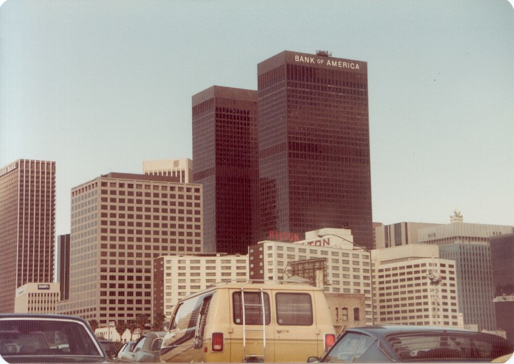

Los Angeles, often referred to by its initials L.A., is the commercial, financial, and cultural center of Southern California. Los Angeles is the largest city in the state of California, the second most populous city in the United States after New York City, and one of the world's most populous megacities. With a population of roughly 3.9 million residents within the city limits as of 2020, Los Angeles is known for its Mediterranean climate, ethnic and cultural diversity, being the home of the Hollywood film industry, and its sprawling metropolitan area. The city lies in a basin in Southern California adjacent to the Pacific Ocean in the west and extending through the Santa Monica Mountains and north into the San Fernando Valley, with the city bordering the San Gabriel Valley to its east. It covers about 469 square miles (1,210 km2), and is the county seat of Los Angeles County, which is the most populous county in the United States with an estimated 9.86 million residents as of 2022.
Main Information
The area that became Los Angeles was claimed by Juan Rodríguez Cabrillo for Spain in 1542. The city was founded on September 4, 1781, under Spanish governor Felipe de Neve, on the village of Yaanga. It became a part of Mexico in 1821 following the Mexican War of Independence. In 1848, at the end of the Mexican–American War, Los Angeles and the rest of California were purchased as part of the Treaty of Guadalupe Hidalgo, and thus became part of the United States. Los Angeles was incorporated as a municipality on April 4, 1850, five months before California achieved statehood. The discovery of oil in the 1890s brought rapid growth to the city. The city was further expanded with the completion of the Los Angeles Aqueduct in 1913, which delivers water from Eastern California.
Los Angeles has a diverse economy with a broad range of industries. It has the busiest container port in the Americas. In 2018, the Los Angeles metropolitan area had a gross metropolitan product of over $1.0 trillion, making it the city with the third-largest GDP in the world, after New York City and Tokyo. Los Angeles hosted the 1932 and 1984 Summer Olympics and will host the 2028 Summer Olympics. More recently, statewide droughts in California have strained both the city’s and Los Angeles County’s water security.
Pronunciation of the name

The local English pronunciation of the name of the city has varied over time. A 1953 article in the journal of the American Name Society asserts that the pronunciation lawss AN-jəl-əs was established following the 1850 incorporation of the city and that since the 1880s the pronunciation lohss ANG-gəl-əs emerged out of a trend in California to give places Spanish, or Spanish-sounding, names and pronunciations. In 1908, librarian Charles Fletcher Lummis, who argued for the name's pronunciation with a hard reported that there were at least 12 pronunciation variants. In the early 1900s, the Los Angeles Times advocated for pronouncing it Loce AHNG-hayl-ais, approximating Spanish, by printing the respelling under its masthead for several years. This did not find favor.
Since the 1930s, has been most common. In 1934, the United States Board on Geographic Names decreed that this pronunciation be used. This was also endorsed in 1952 by a "jury" appointed by Mayor Fletcher Bowron to devise an official pronunciation.
History
Pre-colonial history
The Los Angeles coastal area was settled by the Tongva (Gabrieleño) and Chumash tribes. Los Angeles was founded on the village of iyáanga’ or Yaanga (written "Yang-na" by the Spanish), meaning "poison oak place". Maritime explorer Juan Rodríguez Cabrillo claimed the area of southern California for the Spanish Empire in 1542 while on an official military exploring expedition moving northward along the Pacific coast from earlier colonizing bases of New Spain in Central and South America. Gaspar de Portolà and Franciscan missionary Juan Crespí reached the present site of Los Angeles on August 2, 1769.
Spanish rule
In 1771, Franciscan friar Junípero Serra directed the building of the Mission San Gabriel Arcángel, the first mission in the area. On September 4, 1781, a group of forty-four settlers known as "Los Pobladores" founded the pueblo (town) they called El Pueblo de Nuestra Señora la Reina de los Ángeles, 'The Town of Our Lady the Queen of the Angels'. The original name of the settlement is disputed; the Guinness Book of World Records rendered it as "El Pueblo de Nuestra Señora la Reina de los Ángeles de Porciúncula";[36] other sources have shortened or alternate versions of the longer name.[37] The present-day city has the largest Roman Catholic archdiocese in the United States. Two-thirds of the Mexican or (New Spain) settlers were mestizo or mulatto, a mixture of African, indigenous and European ancestry.[38] The settlement remained a small ranch town for decades, but by 1820, the population had increased to about 650 residents.[39] Today, the pueblo is commemorated in the historic district of Los Angeles Pueblo Plaza and Olvera Street, the oldest part of Los Angeles.
Mexican Rule
New Spain achieved its independence from the Spanish Empire in 1821, and the pueblo now existed within the new Mexican Republic. During Mexican rule, Governor Pío Pico made Los Angeles, Alta California's regional capital. By this time, the new republic introduced more secularization acts within the Los Angeles region. In 1846, during the wider Mexican-American war, marines from the United States occupied the pueblo. This resulted in the siege of Los Angeles where 150 Mexican militias fought the occupiers which eventually surrendered.
1847 to present
Mexican rule ended during the Mexican–American War: Americans took control from the Californios after a series of battles, culminating with the signing of the Treaty of Cahuenga on January 13, 1847.
Railroads arrived with the completion of the transcontinental Southern Pacific line from New Orleans to Los Angeles in 1876 and the Santa Fe Railroad in 1885. Petroleum was discovered in the city and surrounding area in 1892, and by 1923, the discoveries had helped California become the country's largest oil producer, accounting for about one-quarter of the world's petroleum output. 1900, the population had grown to more than 102,000, putting pressure on the city's water supply. The completion of the Los Angeles Aqueduct in 1913, under the supervision of William Mulholland, ensured the continued growth of the city. Because of clauses in the city's charter that prevented the City of Los Angeles from selling or providing water from the aqueduct to any area outside its borders, many adjacent cities and communities felt compelled to join Los Angeles.
Los Angeles created the first municipal zoning ordinance in the United States. On September 14, 1908, the Los Angeles City Council promulgated residential and industrial land use zones. The new ordinance established three residential zones of a single type, where industrial uses were prohibited. The proscriptions included barns, lumber yards, and any industrial land use employing machine-powered equipment. These laws were enforced against industrial properties after the fact. These prohibitions were in addition to existing activities that were already regulated as nuisances. These included explosives warehousing, gas works, oil drilling, slaughterhouses, and tanneries. Los Angeles City Council also designated seven industrial zones within the city. However, between 1908 and 1915, the Los Angeles City Council created various exceptions to the broad proscriptions that applied to these three residential zones, and as a consequence, some industrial uses emerged within them. There are two differences between the 1908 Residence District Ordinance and later zoning laws in the United States. First, the 1908 laws did not establish a comprehensive zoning map as the 1916 New York City Zoning Ordinance did. Second, the residential zones did not distinguish types of housing; they treated apartments, hotels, and detached-single-family housing equally.
In 1910, Hollywood merged into Los Angeles, with 10 movie companies already operating in the city at the time. By 1921, more than 80 percent of the world's film industry was concentrated in L.A. The money generated by the industry kept the city insulated from much of the economic loss suffered by the rest of the country during the Great Depression. By 1930, the population surpassed one million. In 1932, the city hosted the Summer Olympics.
During World War II Los Angeles was a major center of wartime manufacturing, such as shipbuilding and aircraft. Calship built hundreds of Liberty Ships and Victory Ships on Terminal Island, and the Los Angeles area was the headquarters of six of the country's major aircraft manufacturers (Douglas Aircraft Company, Hughes Aircraft, Lockheed, North American Aviation, Northrop Corporation, and Vultee). During the war, more aircraft were produced in one year than in all the pre-war years since the Wright brothers flew the first airplane in 1903, combined. Manufacturing in Los Angeles skyrocketed, and as William S. Knudsen, of the National Defense Advisory Commission put it, "We won because we smothered the enemy in an avalanche of production, the like of which he had never seen, nor dreamed possible.
After the end of World War II Los Angeles grew more rapidly than ever, sprawling into the San Fernando Valley. The expansion of the Interstate Highway System during the 1950s and 1960s helped propel suburban growth and signaled the demise of the city's electrified rail system, once the world's largest. As a consequence of World War II, suburban growth, and population density, many amusement parks were built and operated in this area.[59] An example is Beverly Park, which was located at the corner of Beverly Boulevard and La Cienega before being closed and substituted by the Beverly Center.
Empty heading
Racial tensions led to the Watts riots in 1965, resulting in 34 deaths and over 1,000 injuries.